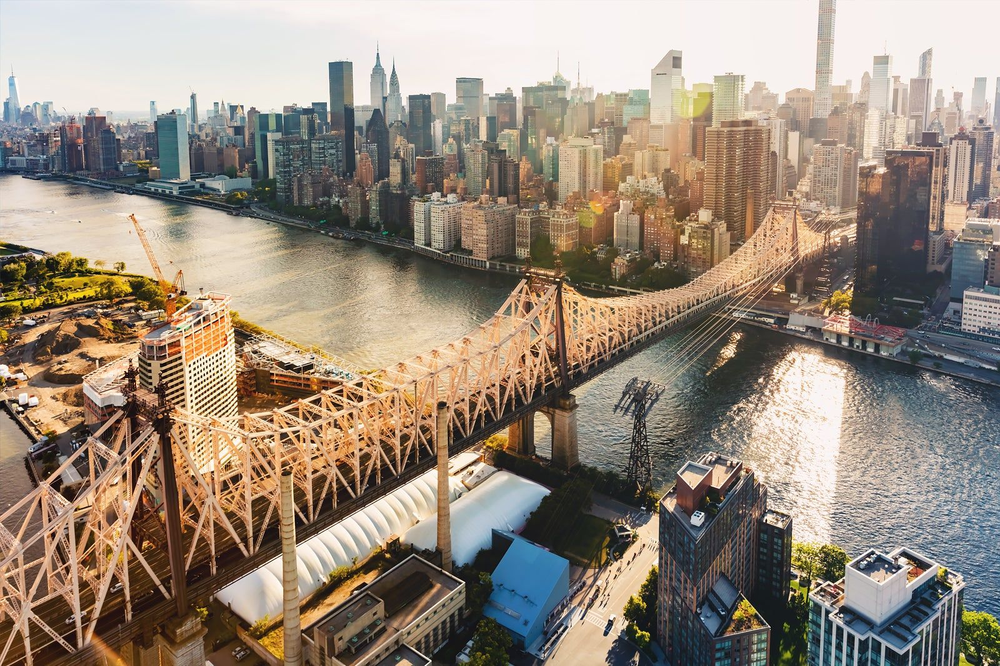
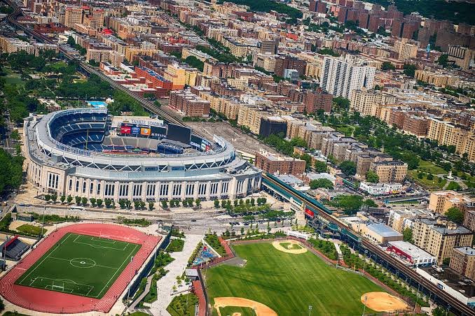
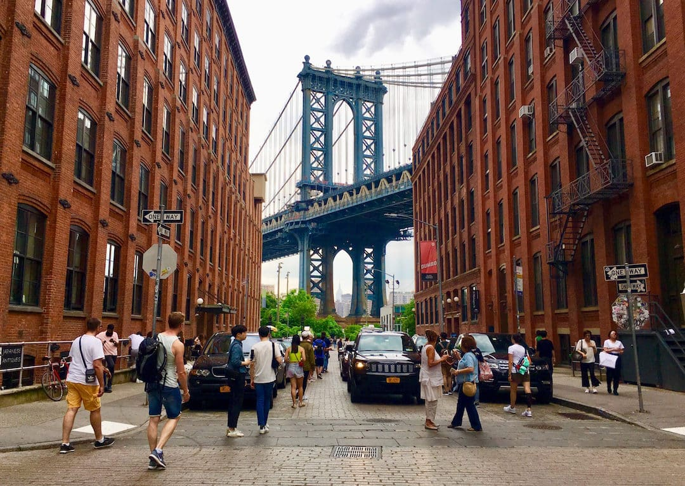
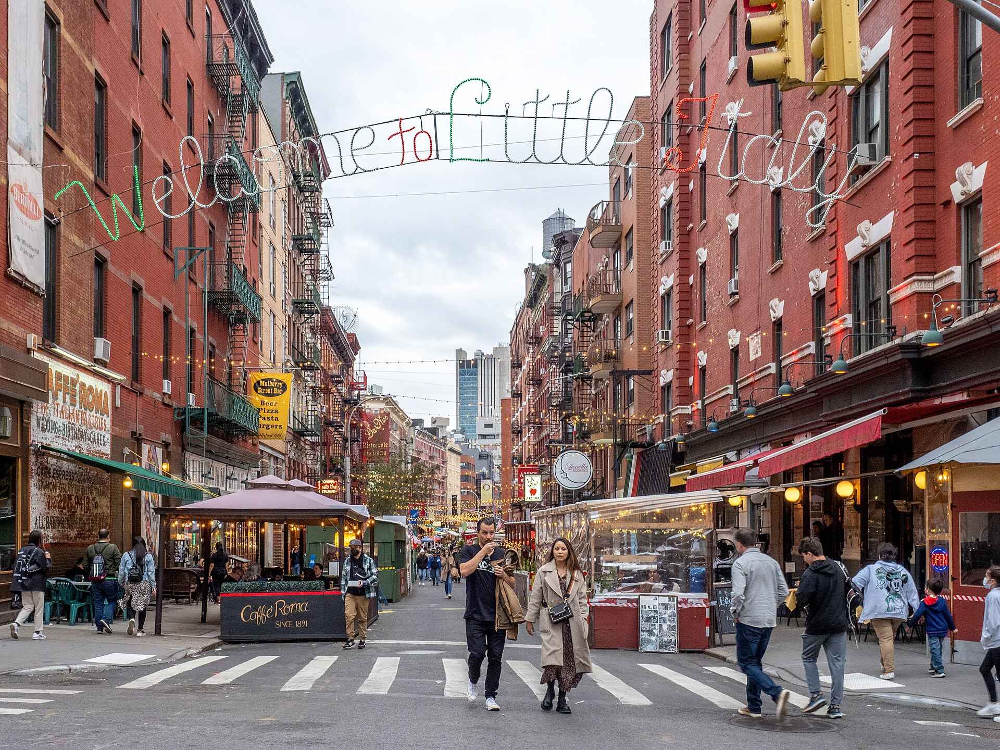
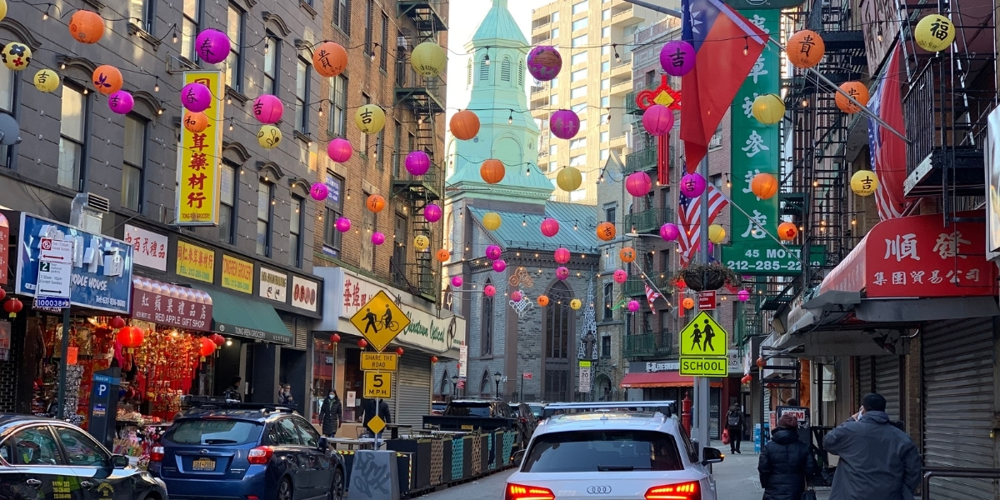
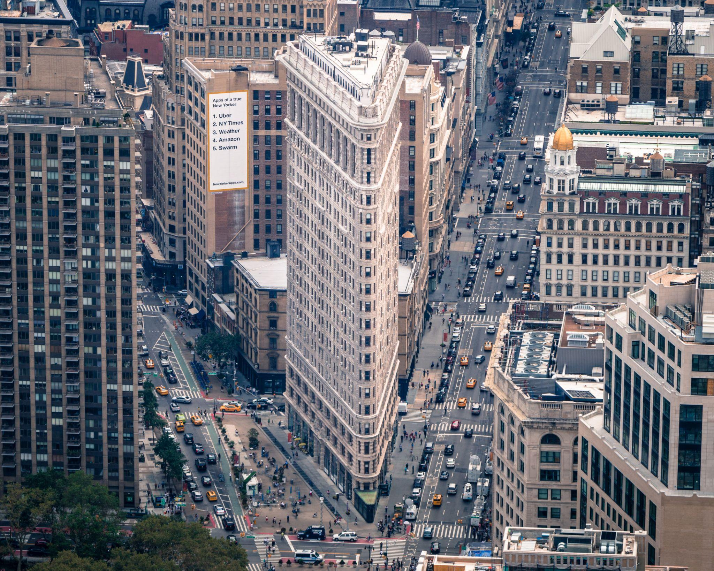
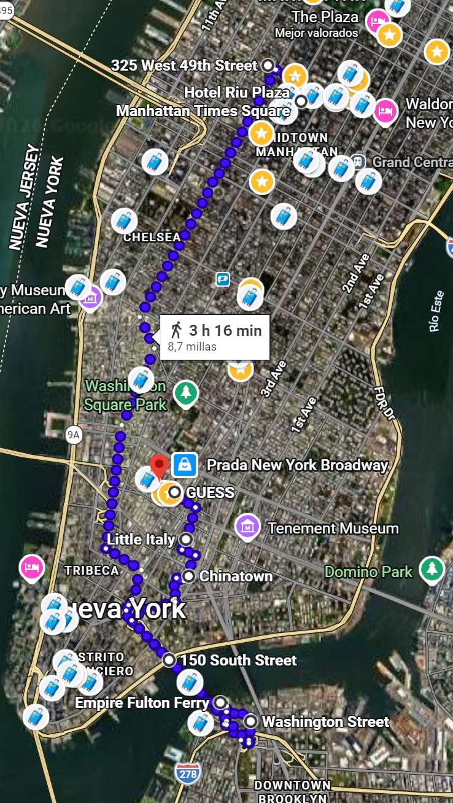

📅 Horario del día
Visita / Monumento
Comer / Beber
Desplazamiento
06:30 – 7:30
🏃 Posibilidad salir a correr
Opcional: salida matutina a correr antes del tour. Hay 1 km hasta Central Park.
07:30 – 08:45
☕ Desayuno
Deli, 7 Eleven o Matto Espresso — cafés express cerca del hotel.
08:45 – 13:45
🏙 Tour Contrastes (5h)
Excursión organizada de 5 horas por los contrastes de la ciudad.
13:45 – 15:15
🍽️ Comer en Brooklyn
Time Out Market, La Bagel Delight o Juliana's. O comer en Joe's Pizza o 2 Bros Pizza.
15:15 – 16:00
🌉 Brooklyn: Puente + Dumbo + Empire Fulton (45 min)
Empire Fulton Ferry, Washington Street (foto icónica del puente con el skyline), Puente de Brooklyn.
16:00 – 16:45
🚶🏻♂️➡️ Puente de Brooklyn → Chinatown
Caminar hasta Chinatown.
16:45 – 17:20
🏮 Chinatown (45 min)
Canal Street, Grand Street, Mott Street.
17:20 – 17:50
🍝 Little Italy (30 min)
Mulberry Street.
17:50 – 18:00
🚶🏻♂️➡️ Puente de Little Italy → SoHo
Caminar hasta SoHo.
18:00 – 18:40
🛍 SoHo — Guess, Levi's, Bloomingdale's, Crocs, UGG, Alo (45 min). Cierran a las 19:00, algunas a las 20:00.
Zona de tiendas de moda en SoHo.
18:40 – 19:10
👟 Adidas, Nike, New Era, Gymshark (30 min)
Tiendas de marcas deportivas en la zona. Cierran a las 19:00, algunas a las 20:00.
19:10 – 19:40
🚶🏻♂️➡️ Soho → Union Square
Caminar hasta Union Square.
19:40 – 19:50
🌿 Union Square
Paseo por Union Square.
19:50 – 20:10
🤓 Forbidden Planet
Tienda friki imprescindible. Cierra a las 20:00 o a las 21:00.
20:10 – 20:20
🚶🏻♂️➡️ Union Square → Flatiron Building
Caminar hasta Flatiron Building.
20:20 – 20:40
🧙 Harry Potter Shop
Parada en la tienda de Harry Potter. Cierra a las 19:00 o 20:00 entre semana. Seguramente haya que volver.
20:40 – 20:50
🏢 Flatiron Building
El edificio más icónico de Manhattan. Foto imprescindible.
20:50 – 21:10
🚶🏻♂️➡️ Flatiron Building → Macy's
Caminar hasta Macy's
21:10 – 21:10
🏢 Macy's
Grandes almacenes. Si es pronto, entrar, sino estará cerrado.
21:10 – 21:20
🚶🏻♂️➡️ Macy's → Joe's Pizza
Caminar hasta la cena. IMPORTANTE. Podemos valorar acercarnos a Bryant Park, para verlo de noche y no tener que ir el día siguiente por la noche.
21:20 – 22:00
🍕 Cena — Joe's Pizza + Hotel
Joe's Pizza y comerlo en el hotel. 9 min andando de vuelta.
22:15 – 00:00
🏨 Hotel
Llegada al hotel, a descansar y cargar pilas para el día siguiente.
Ruta en Google Maps
🗺️ Abrir ruta 1 en Maps 🗺️ Abrir ruta 2 en Maps